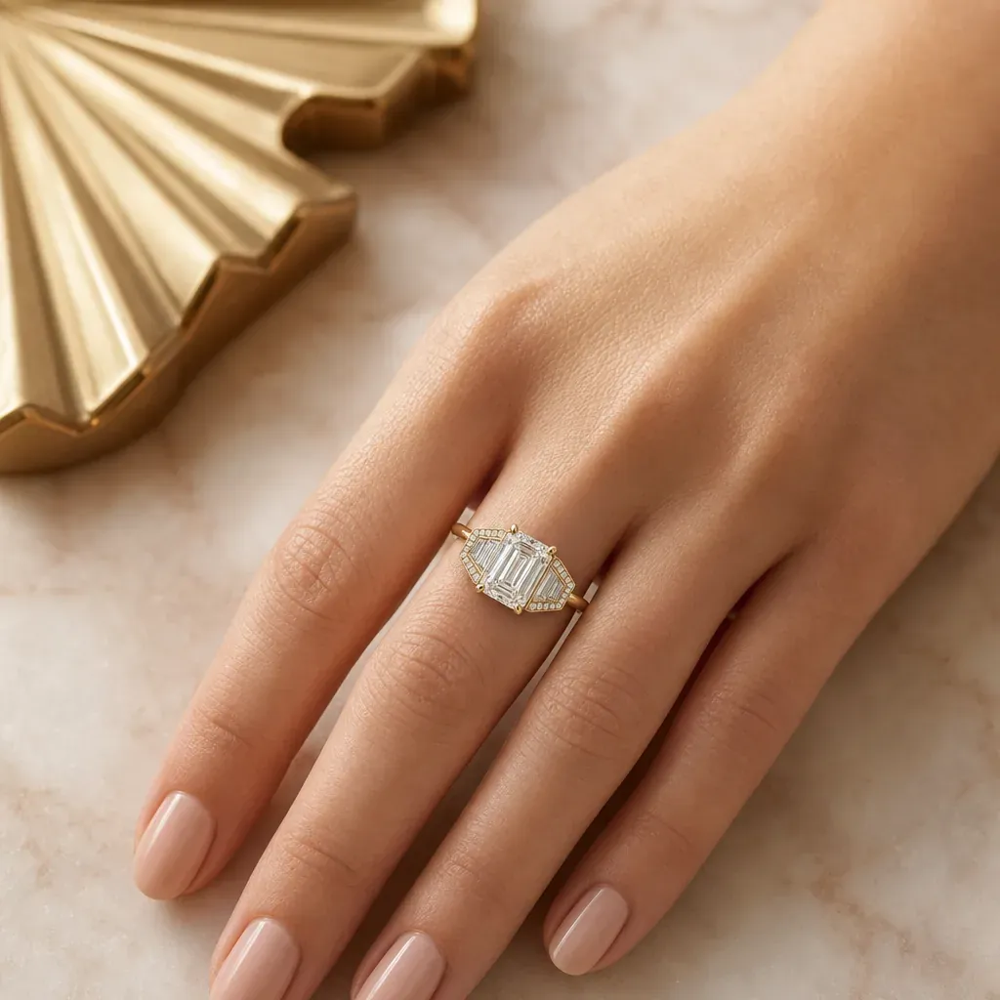

What makes a ring Art Deco?
Geometry, step cuts and symmetry: the details that define the style.

Art Deco jewellery comes from the 1920s and 1930s, a period that loved clean lines, bold geometry and glamour. Several Morrow designs draw directly on that language.
Geometry first
Where earlier jewellery favoured flowing, natural forms, Art Deco pieces are built from straight lines, steps, hexagons and fans. Look at the shoulders of our Art Deco Champagne ring: the baguettes step down on each side like a staircase.
Step-cut stones
Baguettes and emerald cuts, with their long rectangular facets, are typical of the period. They give a hall-of-mirrors sparkle rather than the scattered fire of a round brilliant.
Perfect symmetry
Art Deco designs are usually mirror-symmetrical, with the centre stone framed evenly on both sides. That balance is what makes them feel so composed.
Fine detail
Many original Deco pieces are edged with tiny pavé diamonds or milgrain. You can see this in the pavé border of our Art Deco Emerald-Cut.
Explore the full Art Deco collection.